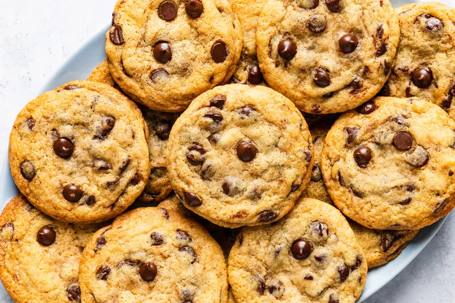

Back to Recipes
Cookies

Cookies are a classic dessert that can be prepared quickly with simple ingredients. They are crispy on the outside and soft on the inside.
Ingredients
- All-purpose flour, 250 g
- Butter (room temperature), 125 g
- Sugar, 100 g
- Brown sugar, 50 g
- Egg, 1
- Vanilla extract, 1 teaspoon
- Baking powder, 1 teaspoon
- Salt, a pinch
- Chocolate chips, 150 g
Recipe
- Preheat oven to 180°C and line a baking tray with parchment paper.
- In a bowl, cream together the butter, sugar, and brown sugar until fluffy.
- Add the egg and vanilla extract, mixing until smooth.
- In another bowl, combine flour, baking powder, and salt.
- Gradually mix the dry ingredients into the wet mixture.
- Stir in the chocolate chips until evenly distributed.
- Using a spoon, scoop small portions of dough onto the baking tray, leaving space between cookies.
- Bake for 10–12 minutes until golden around the edges but still soft in the center.
- Allow to cool on a rack before serving.